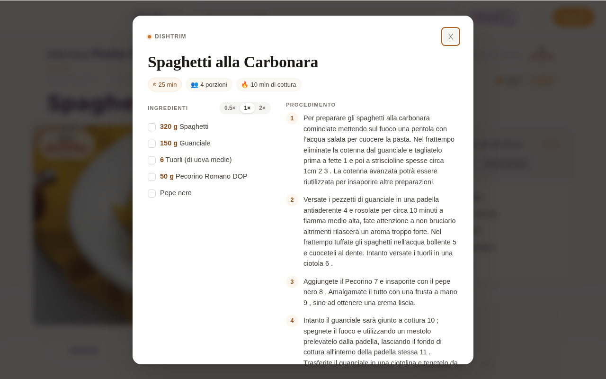
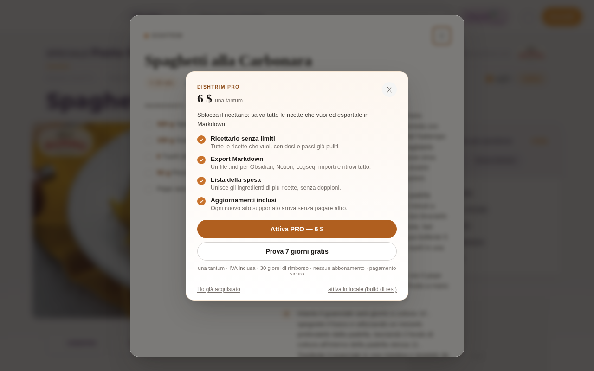

Un'estensione per Chrome che toglie storie, banner, newsletter e pubblicità dai blog di cucina: restano ingredienti, dosi e passaggi, con le quantità scalabili.

5,99 € una tantum (lifetime) · 7 giorni di prova senza carta · IVA inclusa
Gratis: vista pulita, dosi, copia, stampa e 5 ricette salvate.
Su Chrome e sui browser basati su Chromium (Edge, Brave, Vivaldi), da Chrome Web Store. L'estensione non è affiliata ai siti di ricette su cui viene usata: legge solo i dati che la pagina rende già pubblici e non modifica il sito.
